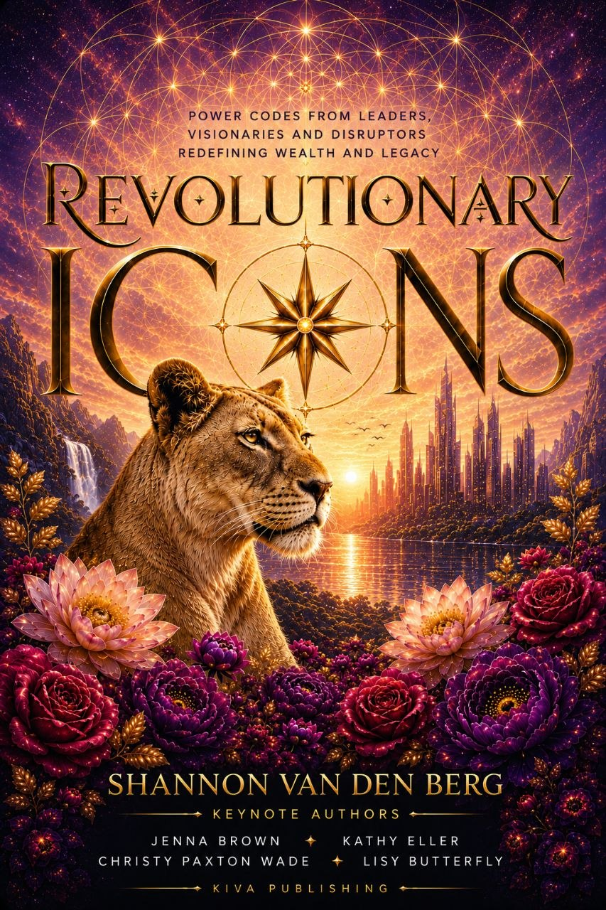

writer · oracle · mirror
Bentonville, Arkansas · Available worldwide
For the reader in a threshold that is asking, finally, to be mapped.
Begin HereA book, a map, a weaving, a reading. Walk through whichever one is calling.

Keynote Author Christy Paxton Wade, Sovereign Descent
A collection of power codes from leaders, visionaries, and disruptors redefining wealth and legacy.
Read the Book →Thirteen Fields, sixty-nine subterrains, four registers. A working cartography for consciousness experienced as a life.
Walk the Map →What your ancestors carried lands in you through specific channels and frequencies. Your archive is speaking.
The Tapestry →A quiz that reads the structural fingerprint of what's surfacing for you, and what the threshold is asking.
Take the Reading →Keynote Author Christy Paxton Wade, Sovereign Descent
A collection of power codes from leaders, visionaries, and disruptors redefining wealth and legacy. Christy's chapter, Sovereign Descent, maps the descent every reader is already somewhere inside — what it asks, what it asks back, and how to walk it without losing the thread of yourself.
It is revolutionary when a woman stops fighting for channels that were never built to receive her, and descends with deliberation into the only terrain where her true frequency can be heard.
Read the BookPosts written from the underworld of descent — astrology, ancestry, and the Navigation Map that names the terrain underneath both. The writing moves through the Fields in real time: what's active, what's surfacing, what the lineage is trying to complete through the living descendant.
Read the SubstackIf the map you have been using has stopped being the map, a designed companion arrives. Thirteen Fields. Sixty-nine Subterrains. The Shadow opened at full depth. Free, in your inbox.
Receive the Architecture